2. Возење со чамец, брод или подморница по езерото - Искусете го Охрид на поинаков начин.
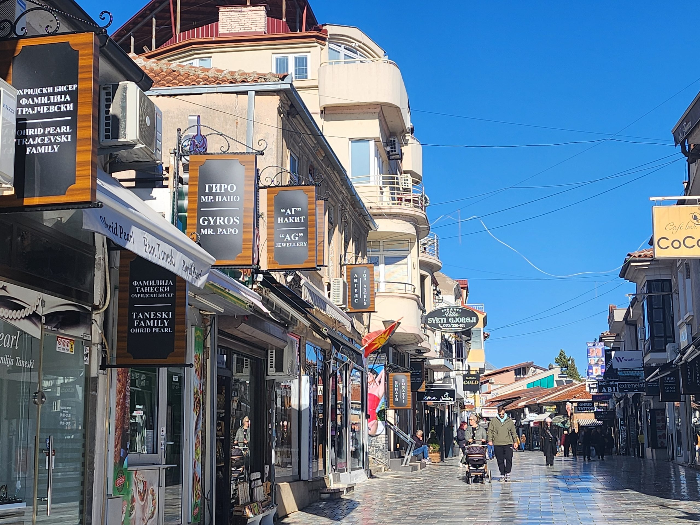
3. Прошетка низ старата чаршија - Уживајте во калдрмисаните улици, локални продавници и сувенири.
 4. Посета на Самоиловата тврдина - Историска крепост со прекрасен поглед кон градот и езерото.
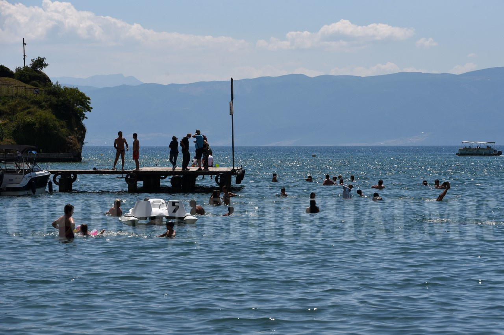
5. Капење во Охридското езеро во летната сезона
4. Посета на Самоиловата тврдина - Историска крепост со прекрасен поглед кон градот и езерото.
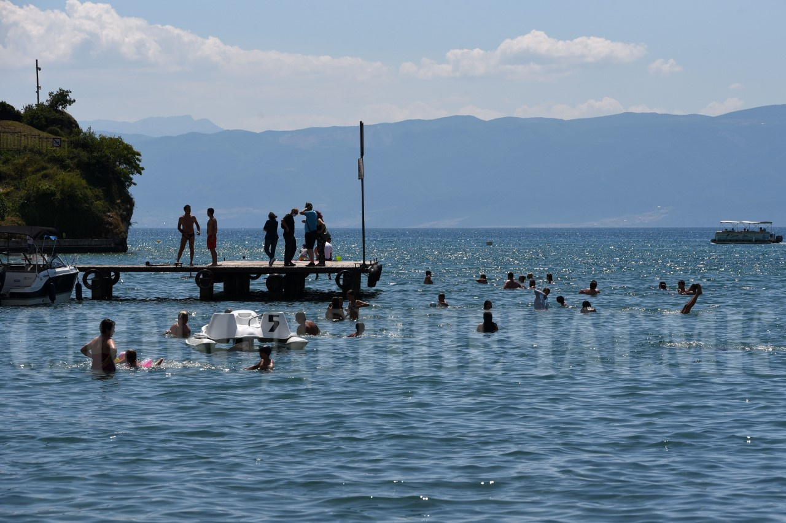
5. Капење во Охридското езеро во летната сезона
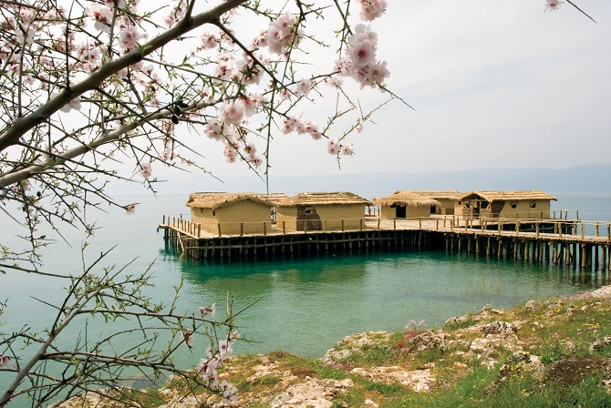
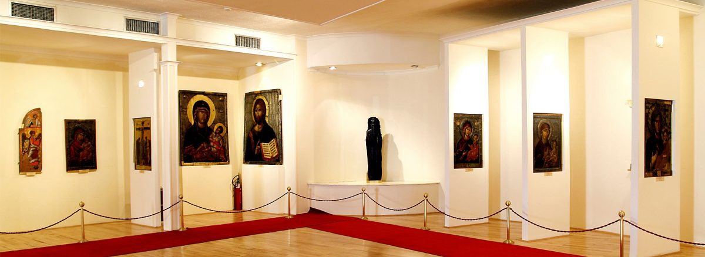
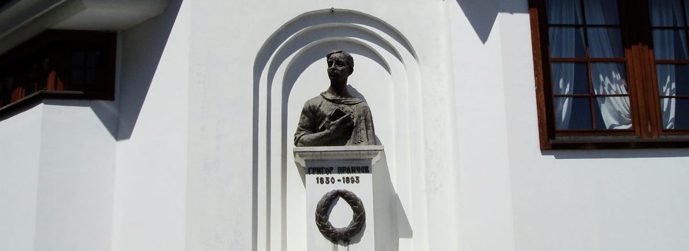
6. Посета на музејски објекти и галерии - Истражување на историјата, уметноста и културното наследство на Охрид.
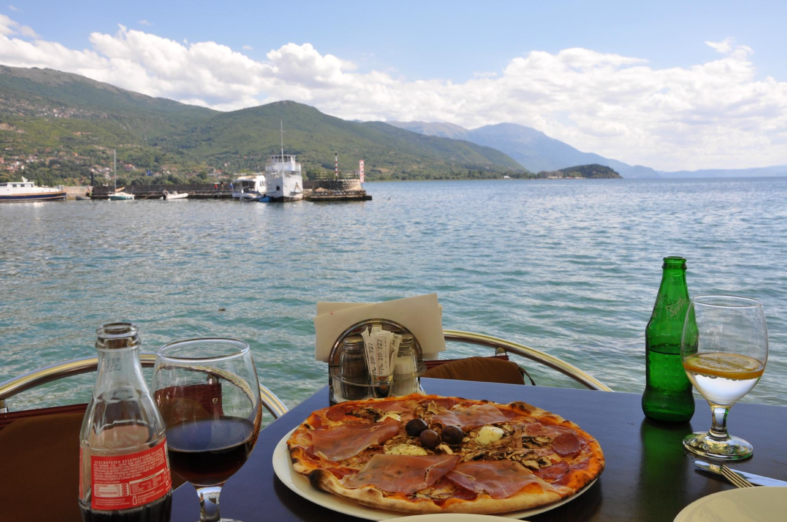
7. Кафе покрај Охридскиот кеј - Опуштање со кафе или сладолед со поглед кон езерото.
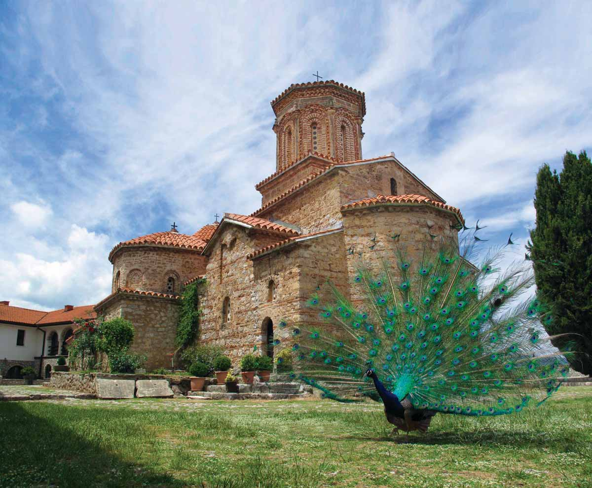
8. Посета на манастирот Св. Наум - Спокоен манастир со извори и природна убавина.
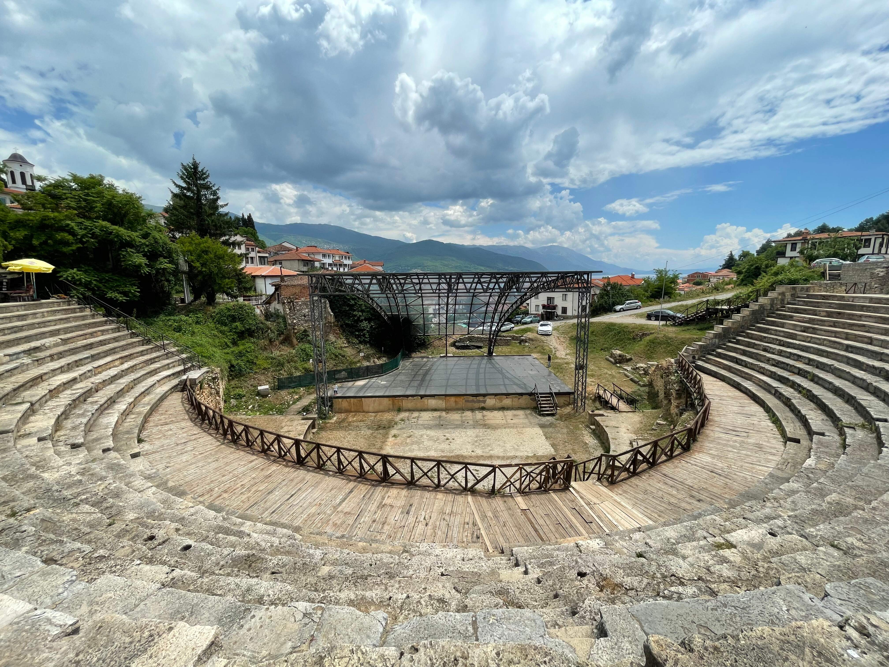
9. Истражување на античкиот театар - Aрхеолошки локалитет од римско време.
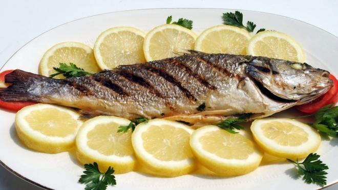
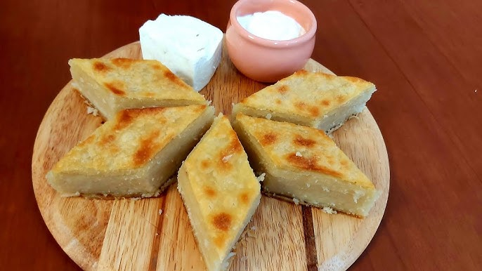
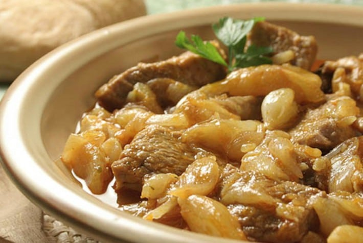
10. Уживање во македонска кујна и охридски специјалитети - Пробајте рибни јадења, домашни деликатеси и локални вкусови.
 1. Посета на црквата Св. Јован Канео - Прекрасна црква сместена на карпа со прекрасен поглед кон езерото.
1. Посета на црквата Св. Јован Канео - Прекрасна црква сместена на карпа со прекрасен поглед кон езерото.
 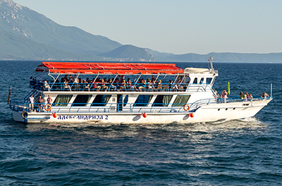
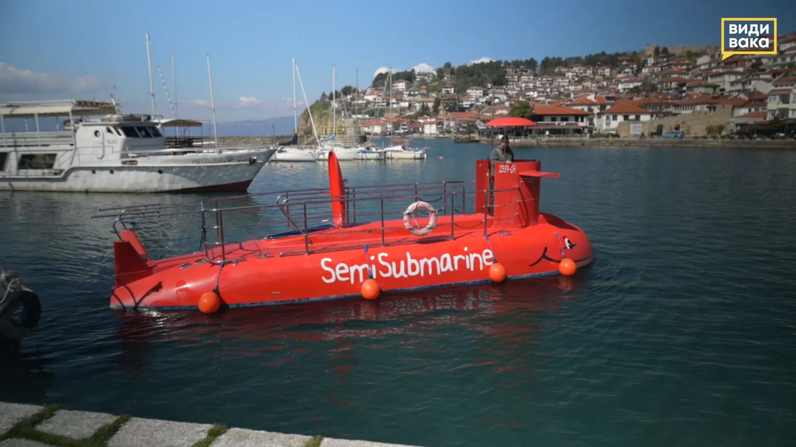
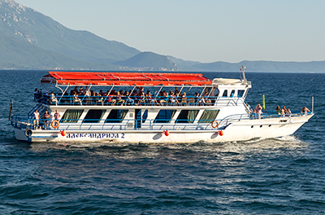
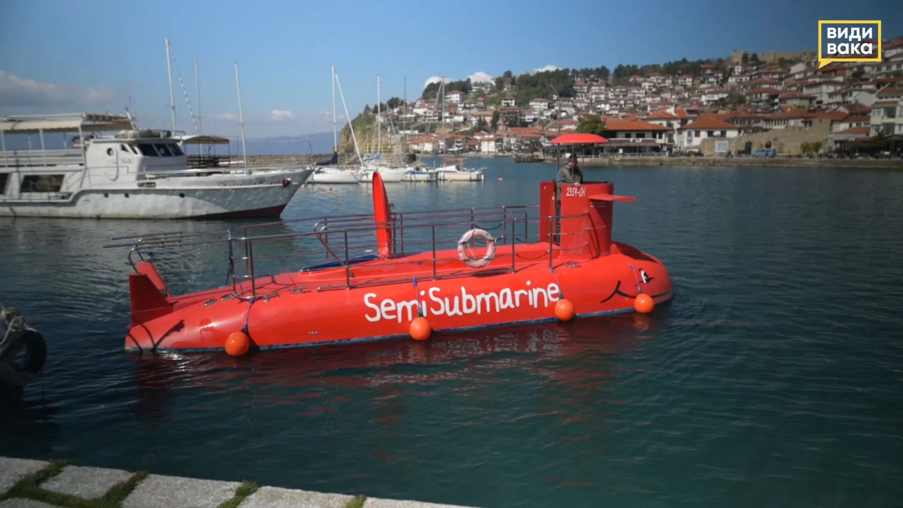